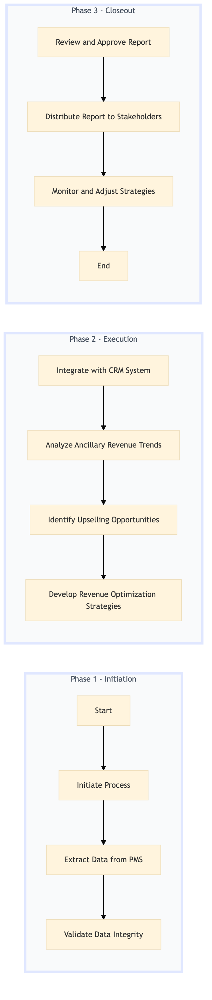

| Role | Steps |
|---|---|
| Revenue Manager | 1.1 3.1 3.2 |
| Revenue Analyst | 1.2 1.3 1.4 2.1 2.2 2.3 |
| General Manager | 3.1 |
| Step | Name | Role | System | Input | Output | KPI | Dec? | Exc? | Pain Point / Risk |
|---|---|---|---|---|---|---|---|---|---|
| 1.1 | Initiate Process | Revenue Manager | Oracle OPERA Cloud | Monthly business cycle trigger | Process initiation log | Less than 5 minutes | N | N | Delays in process initiation can lead to missed reporting deadlines. |
| 1.2 | Extract Data from PMS | Revenue Analyst | Oracle OPERA Cloud | None | Ancillary revenue data extract | Less than 30 minutes | N | Y | Data extraction errors can result in incomplete or inaccurate reports. |
| 1.3 | Validate Data Integrity | Revenue Analyst | Oracle OPERA Cloud | Ancillary revenue data extract | Data validation report | Less than 2 hours | Y | N | Inconsistent or inaccurate data can lead to flawed analysis and recommendations. |
| 1.4 | Integrate with CRM System | Revenue Analyst | Marriott Bonvoy CRM | Validated ancillary revenue data | Integrated CRM report | Less than 2 hours | N | Y | Integration issues can delay the reporting process and impact decision-making. |
| 2.1 | Analyze Ancillary Revenue Trends | Revenue Analyst | Microsoft Power BI | Integrated CRM report | Trend analysis report | Less than 4 hours | Y | N | Complex data analysis can be time-consuming and may require additional resources. |
| 2.2 | Identify Upselling Opportunities | Revenue Analyst | Microsoft Power BI | Trend analysis report | Upselling opportunities report | Less than 3 hours | N | Y | Misinterpretation of data trends can lead to ineffective upselling strategies. |
| 2.3 | Develop Revenue Optimization Strategies | Revenue Manager | Microsoft Power BI | Upselling opportunities report | Revenue optimization strategy document | Less than 6 hours | Y | N | Balancing short-term revenue gains with long-term customer satisfaction can be challenging. |
| 3.1 | Review and Approve Report | General Manager | None | Revenue optimization strategy document | Approved report | Less than 2 hours | Y | N | Inconsistent approval processes can delay the reporting cycle. |
| 3.2 | Distribute Report to Stakeholders | Revenue Manager | Email/SAP S/4HANA | Approved report | Distribution log | Less than 1 hour | N | Y | Failed distribution attempts can lead to missed communication with stakeholders. |
| 3.3 | Monitor and Adjust Strategies | Revenue Manager | Oracle OPERA Cloud | Approved report | Strategy adjustment plan | Less than 4 hours | Y | N | Real-time monitoring and adjustments require continuous effort and coordination. |
The process involves generating and reporting ancillary revenue data from various hotel departments to optimize upselling strategies and improve overall financial performance.